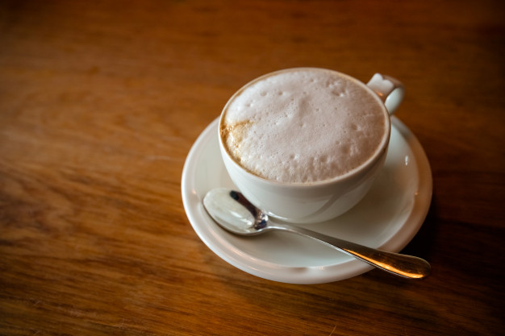

Cappucino

Servings
1
Energy
165 calories
Ingredients:
- 1 cup milk, preferably
- Skims throng coffee
- Cinnamon, for dusting
- Cocoa powder, for dusting
Method:
-
Brew some strong coffee, then half fill a 2-cup measuring cup with
milk (skim milk gives the best foam). Microwave until almost
boiling, about 1 minute and 20 seconds. Place a whisk in the milk.
Holding the handle between your palms, vigorously rub your hands
together so the whisk spins back and forth, creating foam. Partially
fill a mug with the coffee, then pour in the hot milk, holding the
foam back with a spoon. Ladle on the foam, then dust with cinnamon
and cocoa powder.